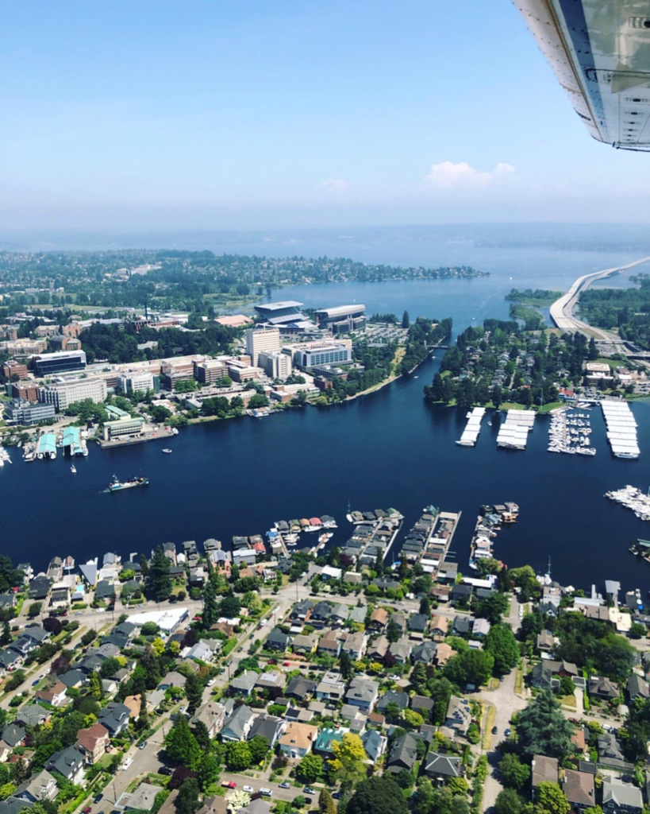
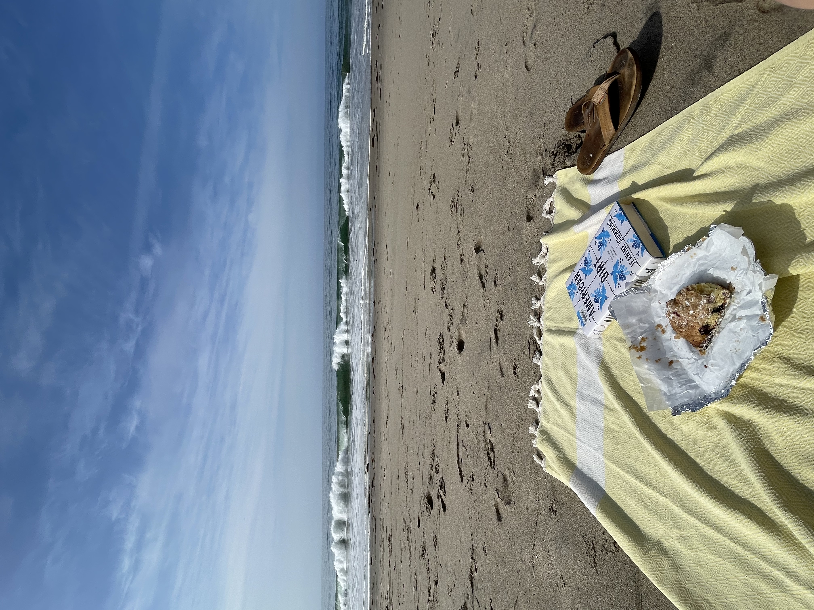
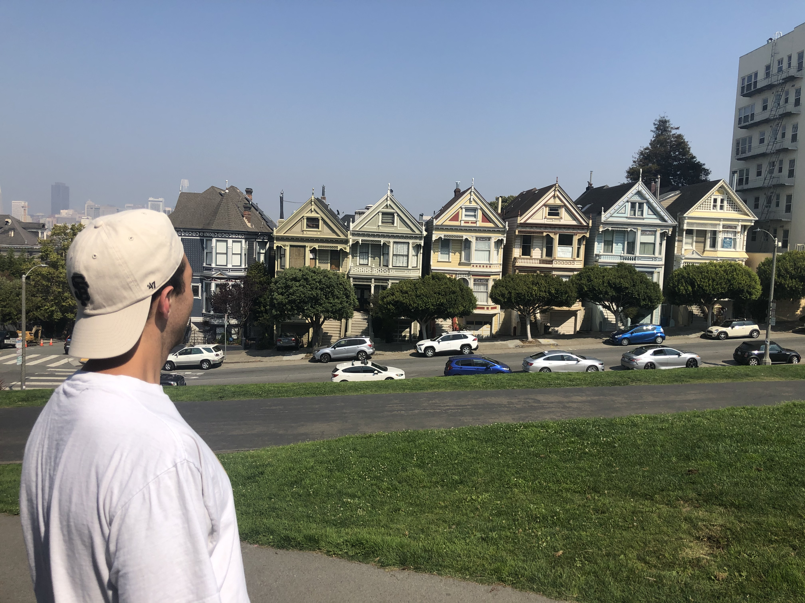
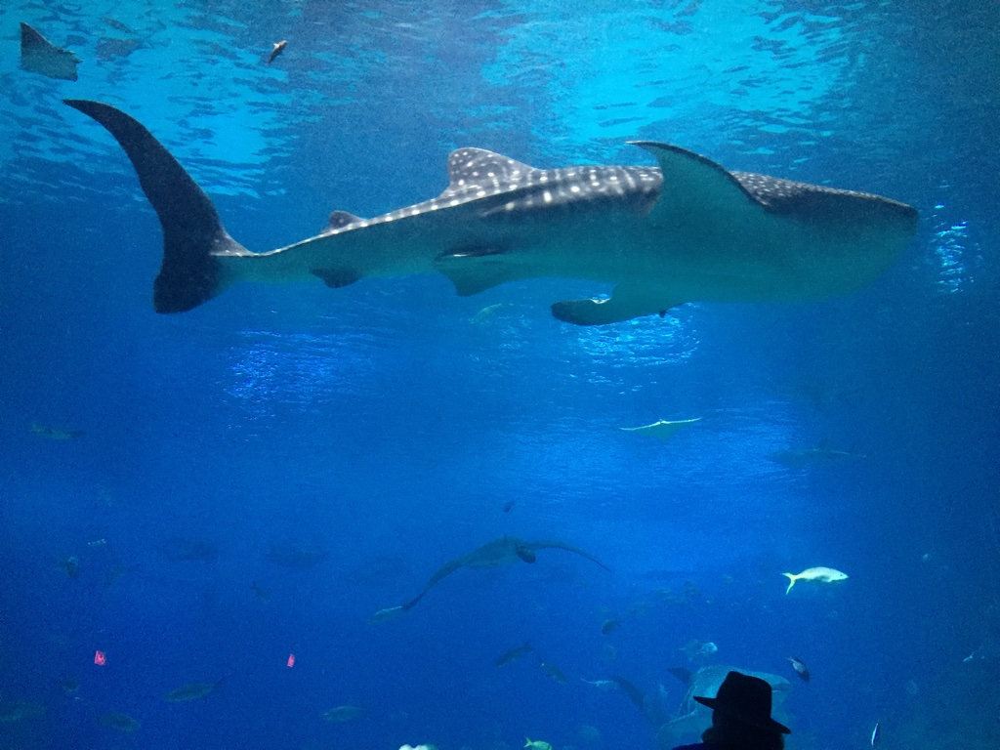
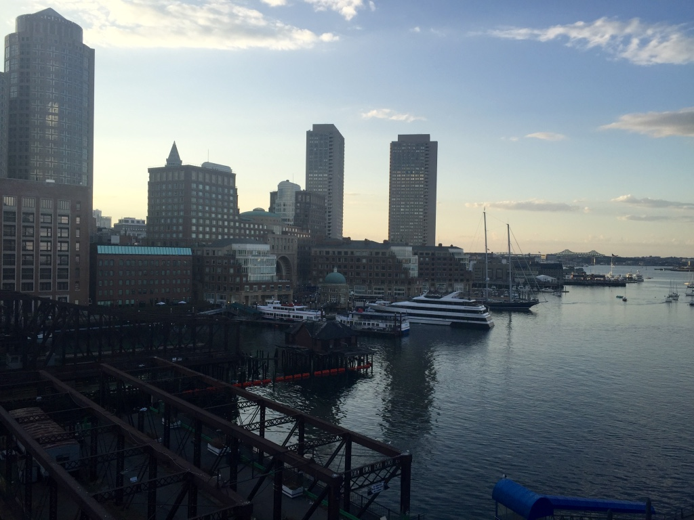
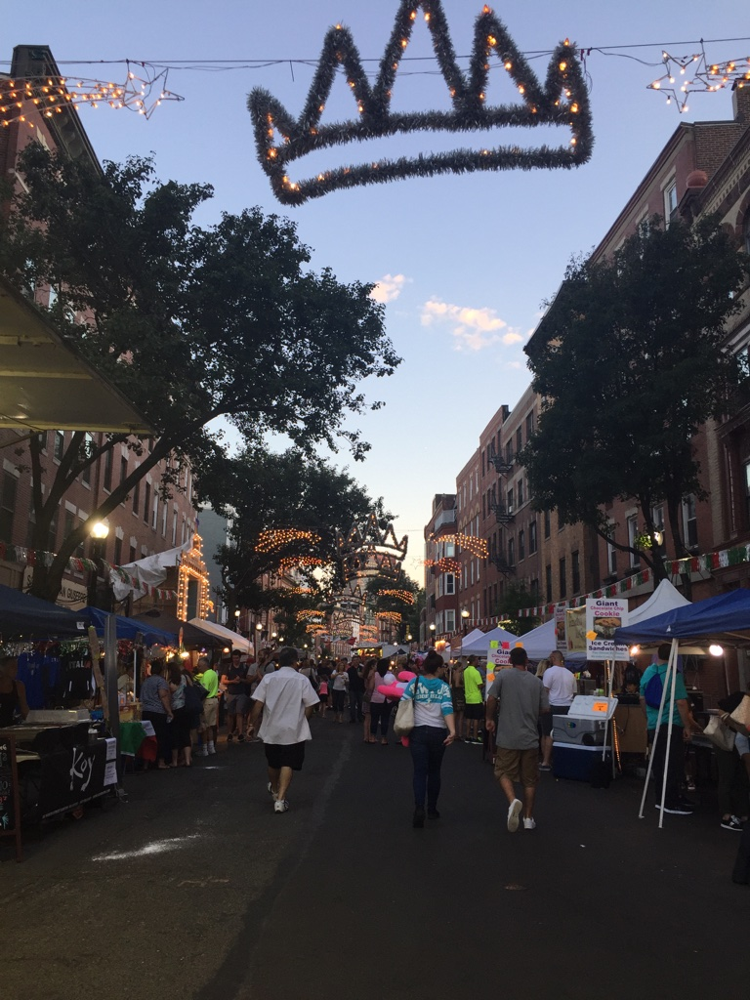
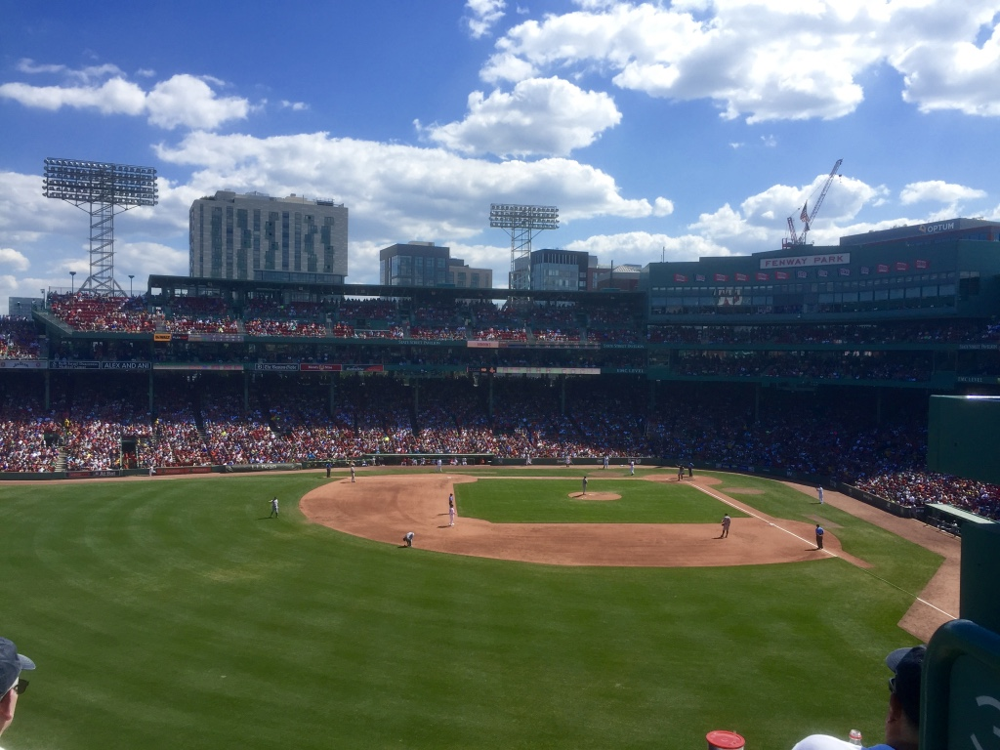
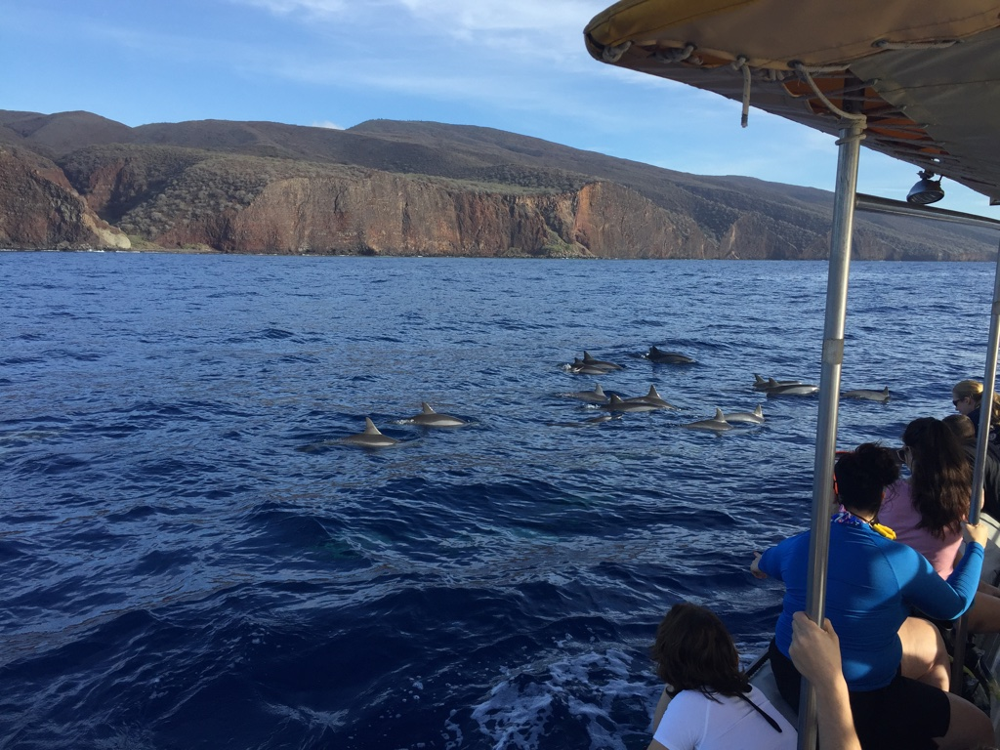
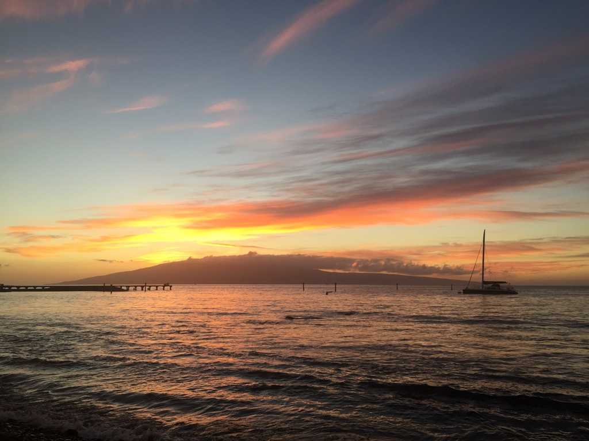

United States
Seattle, Washington
Seattle is where I was born and raised. This city will always be special to me; there is the perfect combination of city and nature for everyone to find something to do. Seattle is home to Pike Place Market (near where I lived!) which is a must see. The lakes are great to go boating on, and the mountains for skiing and hiking are just a short drive away! Plus there is so much amazing seafood.Must do: Pike Place Market.

New York City, New York
The city that never sleeps. What more can I say about New York that hasn't already been said. New York is where I am moving, and the reason it drew me in was the undeniable energy the city has. It's the heart of the United States. The culture, food, city, and sites are something everyone has to see for themselves at least once. Some favorites include walking around Greenwich Village, eating at The Gnocceria in the East Village, attending as many comedy shows as possible, walking along the Highline, and seeing a show on Broadway.Must do: Visit the Empire State Building/a comedy show


Los Angeles, California
The U.S.'s other major city, L.A., is somewhere I've been lucky to visit at varying points in my life. The sunshine of Los Angeles is hard to beat; sprawling beaches, healthy food, and beauty are all things that draw people in. What draws my family in is Disneyland and Sunset Boulevard.Must do: Walk through Venice Beach/Santa Monica Pier



San Francisco, California
I love San Francisco. To me, it's always felt like a combination of Seattle (where I grew up) and L.A. It's sunny but not too warm, and still has the same feeling as Seattle. But it's much bigger. And more hills to tackle. And fog that will randomly appear (aka- you always need a jacket). San Fran is a city I can get lost walking around in, feel perfectly comforable stopping at any of the many parks to rest when I need it, and then enjoying some amazing food at a quaint restaurant to round out the night.Must do: Walk up Lombard Street

Denver, Colorado
Unlike the other cities on this list, I have only been to Denver once. I had a great time -- it did freak me out to feel more land locked than I'm used to but there is plenty to do to remedy that. We went to a concert at Red Rocks which I would definitely reccomend. The neighborhood I loved the most was RiNo, where there are a ton of murals painted everywhere and casual, outdoor dining that was really fun to walk around and spend time in.Must do: Check out Red Rocks
/denver-colorado-DENVERTG0221-20abf6a2611c4bbabefe430569cf48b2.jpg)
Austin, Texas
Austin has the feeling of an up and coming city and there's a youthful energy that reflects that. For someone from the Pacific Northwest, Texas is a far cry from home. The BBQ, heat, and cowboy hats can be a bit of a culture shock at first, but you do get used to it. Austin is very walkable, espcially along the river that almost cuts it in half. Zilker park is great to check out, along with South Congress. The people are friendly which I really liked.Must do: Try the BBQ


Atlanta, Georgia
Atlanta is a bustling city that I wish I'd had more time in. I was only there for weekend over New Years Eve. It was sunny, albeit cold, but that did not stop me from exploring as much of the city as I could. This included the Cenntennial Olympic park, there world famous aquarium, and Buckhead. I need to go back!Must do: Visit the aquarium

Boston, Massachusettes
I spent a summer interning in Boston and loved spending time in a city so full of history. I was interning for the Boston Red Sox, so I was quickly immersed in the East Coast traditions. Living in Back Bay and spending plenty of time at Fenway, I feel like I got the quintessential Boston experience. It was great to make new friends, explore a city that I'd read so much about, and work for an organization that were very passionate about what they do. Some of my favorite memories include walking around Newbury Street, trying restaurants in Little Italy, and meeting new friends after Red Sox games. For this reason, Boston will always have a special place in my memories.Must do: Visit the Boston Commons
  
Maui, Hawaii
Hawaii is one of the most beautiful places, I feel lucky to have visited a few times. It's so tropical that it always surprises me I am technically still in the U.S. Some of my favorite things I've done include whale watching, ziplining, hiking, walking around Lahaina, visiting Mama's Fish House restaurant, and most importantly- enjoying the sun and sea.Must do: Swim in the ocean
 